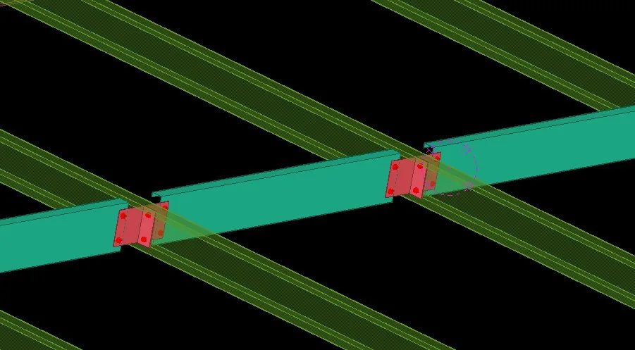
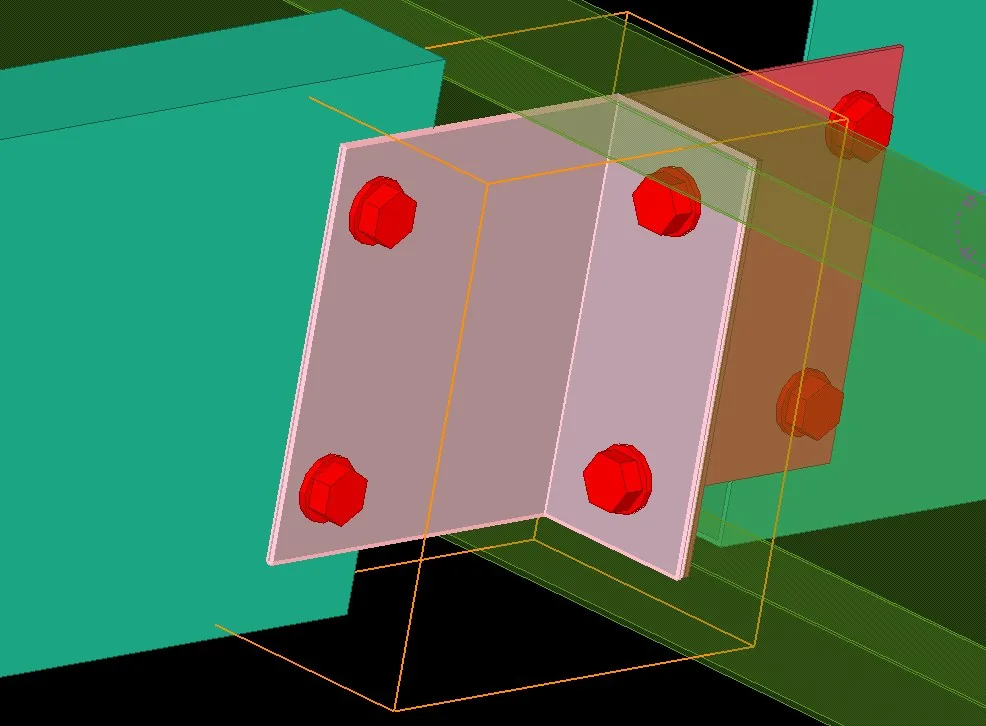

2V Cross Anti-Sag Roof 1.39 — có gì mới
Bản 1.39 cho chọn lỗ slot theo vai trò part, thêm hàng bu-lông thứ hai ngang thanh giằng và sửa lỗi khi Modify cụm cũ.
Tóm tắt nhanh
- Slots in chọn theo vai trò: Default / Klip / Purlin / All, đúng cả khi bu-lông bị lật chiều.
- Across row (tab V Bolts): hàng bu-lông thứ hai theo hướng ngang thanh giằng.
- Sửa lỗi Modify làm kiểu giằng nhảy về chữ X.

1. Slots in: chọn theo vai trò part
Lỗ slot trên tab Bolts trước đây chỉ chọn được Part 1 / Part 2. Nay chọn theo vai trò: Default, Klip, Purlin hoặc All. Thuật toán tự đúng cả khi bu-lông bị lật chiều, nên không phải đoán Part 1 hay Part 2 là chi tiết nào.
2. Across row: hàng bu-lông thứ hai
Ở tab V Bolts, ô Across row thêm hàng bu-lông thứ hai theo hướng ngang thanh giằng. Dùng được cho mọi kiểu bố trí (2 V chéo, 2 V song song, 1 V giữa) và cho cả thép góc lẫn thép máng C.
- Ví dụ giằng C: khoảng cách dọc
30và Across row40cho 4 bu-lông mỗi đầu V. - Across row = 0: giữ 1 hàng như trước.
- Có thể ứng dụng cho xà gồ đố cửa.

3. Lỗi đã sửa
- Modify cụm cũ làm kiểu giằng nhảy về chữ X (combo hình kiểu thanh không giữ giá trị).
4. Cách nâng cấp
- Ở mục Tải về bên dưới, tải gói
iVidLab.AntiSag2VCross_1.39P.tsep. - Nếu đã cài bản cũ, gỡ bản cũ trong Tekla Extension Manager trước.
- Nhấp đúp file
.tsep, tick phiên bản Tekla rồi bấm Import. Gói được cài khi Tekla khởi động lần tiếp theo.
2V Cross Anti-Sag Roof 1.39 — what's new
Version 1.39 lets you choose slotted holes by part role, adds a second bolt row across the brace and fixes a bug when modifying existing components.
At a glance
- Slots in by role: Default / Klip / Purlin / All, correct even when a bolt is flipped.
- Across row (V Bolts tab): a second bolt row across the brace.
- Fixed Modify resetting the brace layout to X.
1. Slots in: choose by part role
Slotted holes on the Bolts tab could only be set to Part 1 / Part 2. You can now choose by role: Default, Klip, Purlin or All. The logic stays correct when a bolt is flipped, so there is no guessing which part is Part 1 or Part 2.
2. Across row: a second bolt row
On the V Bolts tab, Across row adds a second bolt row across the brace. It works with every layout (2 crossed Vs, 2 parallel Vs, 1 centre V) and with both angle and C-channel braces.
- Example, C brace: spacing
30and Across row40give 4 bolts at each V end. - Across row = 0: one row as before.
- Can also be applied to door mullion purlins.
3. Bugs fixed
- Modify on an existing component reset the brace layout to X (the layout combo did not keep its value).
4. How to upgrade
- In the Download section below, get
iVidLab.AntiSag2VCross_1.39P.tsep. - If an older version is installed, uninstall it in Tekla Extension Manager first.
- Double-click the
.tsepfile, tick your Tekla version and click Import. It is installed the next time Tekla starts.
Tải vềDownload

Nhóm Zalo người dùng iViDLabiViDLab user group on Zalo
Quét mã QR hoặc bấm nút bên cạnh để vào nhóm: hỏi đáp khi sử dụng, báo lỗi và nhận thông báo bản cập nhật mới.
Scan the QR code or use the button to join the group: usage questions, bug reports and new release announcements.
Liên hệ iViDLabContact iViDLab
Theo dõi fanpage Facebook hoặc gửi email để được hỗ trợ và góp ý.
Follow the Facebook page or send an email for support and feedback.